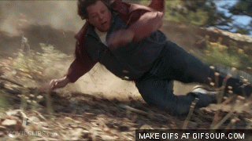

So while in Arizona this spring, I had the opportunity to climb a mountain...
It very well could have gone down like this:
But fortunately for myself and those around me, it looked more like this:
So there I was. Climbing a mountain in the hot desert sun. After a while, I began to feel some kinna' way. I felt feelings of fatigue, of excitement, regret... and after so many hours, the feeling that I, in fact, was the mountain goat.

It took around 4 hours to climb all the way up and back down.There were several times where I questioned my judgement in starting this endeavor. However, the entire way I promised myself that if I could climb a mountain, there was nothing stopping me from learning JavaScript and completing my Front End boot camp. And that's exactly what I intend to do!